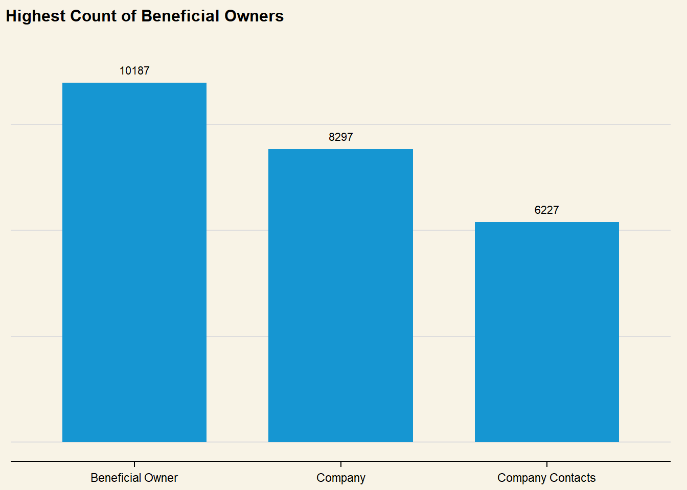

FishEye International, a non-profit focused on countering illegal, unreported, and unregulated (IUU) fishing, has been given access to an international finance corporation’s database on fishing related companies. In the past, FishEye has determined that companies with anomalous structures are far more likely to be involved in IUU (or other fishy business). FishEye has transformed the database into a knowledge graph, including information about companies, owners, workers, and financial status. FishEye is aiming to use this graph to identify anomalies that could indicate if a company is involved in IUU.
Project Objectives
This study aims to use visual analytics to understand patterns of groups in the knowledge graph. This will endeavour to:
develop a visual analytics process to find similar companies and group them
focus on presenting key features of the business to the user
This will be done through investigating the following variables:
%%{
init: {
"theme": "base",
"themeVariables": {
"primaryColor": "#d8e8e6",
"primaryTextColor": "#325985",
"primaryBorderColor": "#325985",
"lineColor": "#325985",
"secondaryColor": "#cedded",
"tertiaryColor": "#fff"
}
}
}%%
flowchart LR
A{Overall\nNetwork} --> B{Companies}
B -->|Similarities?| C(Company Structure)
B -->|Similarities?| D(Location)
B -->|Similarities?| E(Business Type)
B -->|Similarities?| F(Financial Status)
mc3 data consists of undirected graph data, with links and nodes. These are stored as lists instead of vector columns. To transform this into a dataframe, each column is mutated into a character data type using mutate() and as.character() methods.
code block
mc3_links <-as_tibble(mc3$links) %>%distinct() %>%# Change all variable types to character to create dataframemutate(source =as.character(source),target =as.character(target),type =as.character(type)) %>%group_by(source, target, type) %>%summarise(weights =n()) %>%filter(source != target) %>%select(-weights) %>% ungroupmc3_nodes <-as_tibble(mc3$nodes) %>%mutate(id =as.character(id), type =as.character(type), country =as.character(country), product_services =as.character(product_services),# Convert to character first to unlist, then revert to numeric form revenue_omu =as.numeric(as.character(revenue_omu))) %>%# Reorganize columns select(id, country, type, revenue_omu, product_services)
# Check for columns with missing valuescolSums(is.na(mc3_nodes))
id country type revenue_omu
0 0 0 21515
product_services
0
There are 21,515 missing values from the revenue_omu column.
II. Checking for Duplicates
mc3_nodes[duplicated(mc3_nodes),]
# A tibble: 2,595 × 5
id country type revenue_omu product_services
<chr> <chr> <chr> <dbl> <chr>
1 Smith Ltd ZH Company NA Unknown
2 Williams LLC ZH Company NA Unknown
3 Garcia Inc ZH Company NA Unknown
4 Walker and Sons ZH Company NA Unknown
5 Walker and Sons ZH Company NA Unknown
6 Smith LLC ZH Company NA Unknown
7 Smith Ltd ZH Company NA Unknown
8 Romero Inc ZH Company NA Unknown
9 Niger River Marine life Oceanus Company NA Unknown
10 Coastal Crusaders AS Industrial Oceanus Company NA Unknown
# ℹ 2,585 more rows
There are 2,595 duplicated entries. These are removed so as to prevent skewing of aggregate figures in subsequent analyses:
mc3_nodes <-unique(mc3_nodes)
I. Checking for Missing Values:
# Check for columns with missing valuescolSums(is.na(mc3_links))
source target type
0 0 0
There are no missing values in mc3_links
II. Checking for Duplicates:
mc3_links[duplicated(mc3_links),]
# A tibble: 0 × 3
# ℹ 3 variables: source <chr>, target <chr>, type <chr>
There are no duplicated rows for mc3_links data.
1.4: Summary Statistics
skim(mc3_links)
Data summary
Name
mc3_links
Number of rows
24036
Number of columns
3
_______________________
Column type frequency:
character
3
________________________
Group variables
None
Variable type: character
skim_variable
n_missing
complete_rate
min
max
empty
n_unique
whitespace
source
0
1
6
700
0
12856
0
target
0
1
6
28
0
21265
0
type
0
1
16
16
0
2
0
What are the most frequent company roles?
Nodes data is aggregated by country and type to visualise frequency of roles, as well as where each company or person is operating geographically.
code block
# Set default plot themeset_urbn_defaults(style ="print")nodes_type <- mc3_nodes %>%ggplot(aes(x = type) ) +geom_bar() +# Set count annotations above bargeom_text(stat ="count",aes(label =after_stat(count)),vjust =-1 ) +# Ensure than annotations are not cut offylim(0, 11000) +labs(title ="Highest Count of Beneficial Owners" ) +theme(axis.title.y =element_blank(),axis.title.x =element_blank(),axis.text.y =element_blank(),plot.background =element_rect(fill="#F8F3E6",colour="#F8F3E6") )nodes_type
Where are these companies operating from?
code block
# Aggregate data frame by country and typenodes_agg <- mc3_nodes %>%group_by(country, type) %>%# Count number of companies per countrysummarise(count =n(),# Calculate total revenue per countryrevenue_omu =sum(revenue_omu)) %>%ungroup()# Create separate plots for each typep_company <- nodes_agg %>%# Only plot countries with more than 100 companiesfilter(type =="Company"& count >100) %>%ggplot(# Arrange in Descending order of countaes(x =fct_rev(fct_reorder(country, count)),y = count) ) +geom_col() +# Set to prevent trunctation when patchedylim(0,3800) +geom_text(aes(label = count),vjust =-1 ) +#< Set count annotations above barlabs(title ="Most Number of Companies Operating from ZH" ) +theme(axis.title.y =element_blank(),axis.title.x =element_blank(),axis.text.y =element_blank(),plot.background =element_rect(fill="#F8F3E6",colour="#F8F3E6") )# Plot for company contactsp_contact <- nodes_agg %>%# Only plot countries with more than 100 companiesfilter(type =="Company Contacts") %>%ggplot(# Arrange in Descending order of countaes(x =fct_rev(fct_reorder(country, count)),y = count) ) +geom_col() +geom_text(aes(label = count),vjust =-1 ) +ylim(0,10000) +labs(title ="Company Contacts" ) +theme(axis.title.y =element_blank(),axis.title.x =element_blank(),axis.text.y =element_blank(),plot.background =element_rect(fill="#F8F3E6",colour="#F8F3E6") )# Plot for beneficial ownersp_owner <- nodes_agg %>%# Only plot countries with more than 100 companiesfilter(type =="Beneficial Owner") %>%ggplot(# Arrange in Descending order of countaes(x =fct_rev(fct_reorder(country, count)),y = count) ) +geom_col() +geom_text(aes(label = count),vjust =-1 ) +ylim(0,13000) +labs(title ="Beneficial Owners" ) +theme(axis.title.y =element_blank(),axis.title.x =element_blank(),axis.text.y =element_blank(),plot.background =element_rect(fill="#F8F3E6",colour="#F8F3E6") )bottompatch <- (p_contact + p_owner) +plot_annotation(title ="Almost all Company Contacts & Beneficial Owners from ZH")fullpatch <- p_company / bottompatchfullpatch &theme(plot.background =element_rect(fill="#F8F3E6",colour="#F8F3E6"))
Who are the companies connected to?
code block
# Get number of type by source (Company)links_count <- mc3_links %>%group_by(source, type) %>%summarise(count =n()) %>%ungroup()# Plot strip chart to show distibutionlinks_count %>%ggplot(aes(x = count, y = type) ) +geom_point(alpha = .2, size =7 ) +scale_x_continuous() +stat_summary(color ="salmon", fun ="median", geom ="point", size =3.5, alpha = .9 ) +labs(title ="Right-skewed Distribution of Beneficial Owners, Indicative of Publicly Listed Companies",subtitle ="Highlighted points represent median values",x =NULL,y =NULL ) +theme(axis.ticks.y =element_blank(),plot.background =element_rect(fill="#F8F3E6",colour="#F8F3E6") )
How much revenue is being reported?
code block
ggplot(mc3_nodes,aes(x =1, y = revenue_omu) ) +geom_rain(color ="#1696d2",alpha = .5 ) +scale_y_continuous(breaks = scales::pretty_breaks(n=5),labels = scales::dollar ) +labs(title ="Skewed Distribution of Revenue Suggests Range of Company Sizes" ) +theme(axis.ticks.y =element_blank(),axis.title =element_blank(),axis.text.y =element_blank(),plot.background =element_rect(fill="#F8F3E6",colour="#F8F3E6") ) +coord_flip()

skim(mc3_nodes$revenue_omu)
Data summary
Name
mc3_nodes$revenue_omu
Number of rows
25027
Number of columns
1
_______________________
Column type frequency:
numeric
1
________________________
Group variables
None
Variable type: numeric
skim_variable
n_missing
complete_rate
mean
sd
p0
p25
p50
p75
p100
hist
data
18920
0.24
1822155
18184433
3652.23
7676.36
16210.68
48327.66
310612303
▇▁▁▁▁
What are the most common products/services?
Data Preparation: Tokenisation
#|code-fold: true# Replace all 'character(0)' values as unknownmc3_nodes$product_services[mc3_nodes$product_services =="character(0)"] <-"Unknown"# Create new dataframe with words split into separate rowsnodes_unnest <- mc3_nodes %>%# Create new column 'word' to store split wordsunnest_tokens(word, product_services,# Change all words to lowercase for more accurate tokenisationto_lower =TRUE,# Remove punctuation to exclude from tokenisationstrip_punct =TRUE)
# Create a vector containing only the textnodes_text <- nodes_unnest$word # Create a corpustext <-Corpus(VectorSource(nodes_text))
The process of removing specific stopwords using removeWords is an iterative process, where higher frequency words are removed if deemed out of context (such as ‘well’, ‘including’, ‘related’ or unproductive in giving specific information about the nature of businesses (such as ‘source’, ‘materials’, etc).
text <- text %>%# Remove any whitespacetm_map(stripWhitespace) %>%# remove stopwordstm_map(removeWords, stopwords(kind ="en")) %>%# Specity stopwords based on initial analysis of word frequencytm_map(removeWords, c("products", "including", "well", "related", "services", "source", "materials", "goods", "offers", "range"))
# Generate a document-term-matrixdtm <-TermDocumentMatrix(text) matrix <-as.matrix(dtm) # Sort matrix according to frequencywords <-sort(rowSums(matrix),decreasing =TRUE) # Count frequency of each word and save as new column in dataframetext_df <-data.frame(word =names(words),freq = words)kable(head(text_df,15))
word
freq
unknown
unknown
21009
fish
fish
740
seafood
seafood
622
frozen
frozen
467
food
food
345
equipment
equipment
309
fresh
fresh
276
salmon
salmon
252
accessories
accessories
193
systems
systems
180
freight
freight
176
industrial
industrial
164
canned
canned
163
meat
meat
157
processing
processing
155
The table output shows that “Unknown” products and services are the most frequently listed. While this could possibly point to fishy business relationships, these records may also be masking other anomalies present. A separate text dataframe is created without “unknown” products and services:
text_df_known <- text_df[-1,]
code block
wordcloud2(text_df_known, color ="random-dark", backgroundColor ="#F8F3E6")
Plotting a Bigram of frequent Products/Services
Unnesting tokens as bigrams:
nodes_unnest2 <- mc3_nodes %>%unnest_tokens(bigram, product_services, token ="ngrams", n =2, to_lower =TRUE,) %>%# remove empty rowsfilter(!is.na(bigram)) %>%# Remove specific stopwords from bigramsfilter(!str_detect(bigram,"including|range"))product_bigram <- nodes_unnest2 %>%count(bigram, sort =TRUE) %>%# Split bigram words into separate columns, uding space as delimiterseparate(bigram, c("word1", "word2"), sep =" ") %>%# Only match words not in stopwordsanti_join(stop_words, by =c("word1"="word")) %>%anti_join(stop_words, by =c("word2"="word")) %>%# Keep only characters, dropping numbers filter(str_detect(word1, "[a-z]") &str_detect(word2, "[a-z]"))
product_bigram_graph <- product_bigram %>%filter(n >15) %>%graph_from_data_frame()set.seed(1234)ggraph( product_bigram_graph, layout ="nicely" ) +geom_edge_link(# Adjust transparency of link based on how common the bigram isaes(edge_alpha = n),arrow = grid::arrow(type ="closed", length =unit(.2, "cm")),# Leave a gap between arrow head and circleend_cap =circle(.2, 'cm'),show.legend =FALSE ) +geom_node_point(alpha = .7,size =3) +geom_node_text(aes(label = name), repel =TRUE ) +labs(title ="High Frequency of Companies Dealing in Seafood Products",subtitle ="Darker links indicate higher commonality of related terms" ) +theme(plot.background =element_rect(fill="#F8F3E6",colour="#F8F3E6") )
Warning: Using the `size` aesthetic in this geom was deprecated in ggplot2 3.4.0.
ℹ Please use `linewidth` in the `default_aes` field and elsewhere instead.